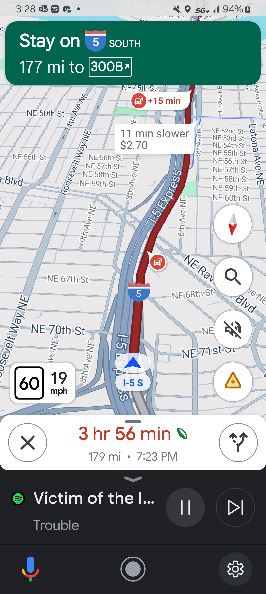
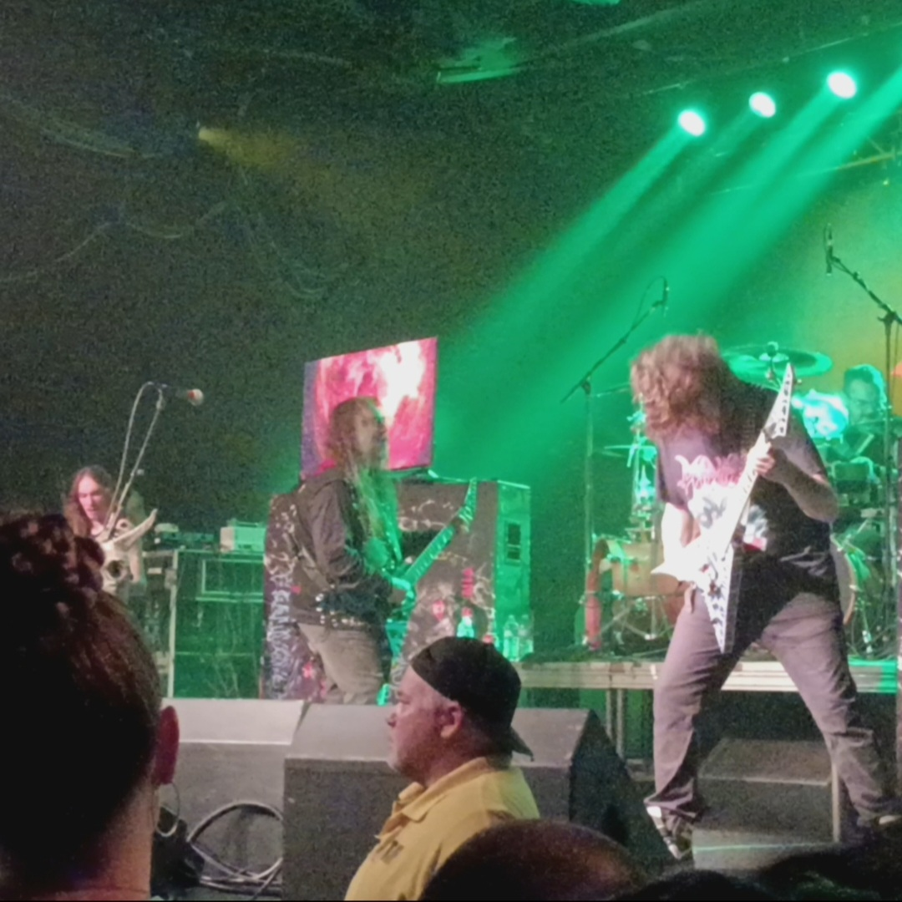
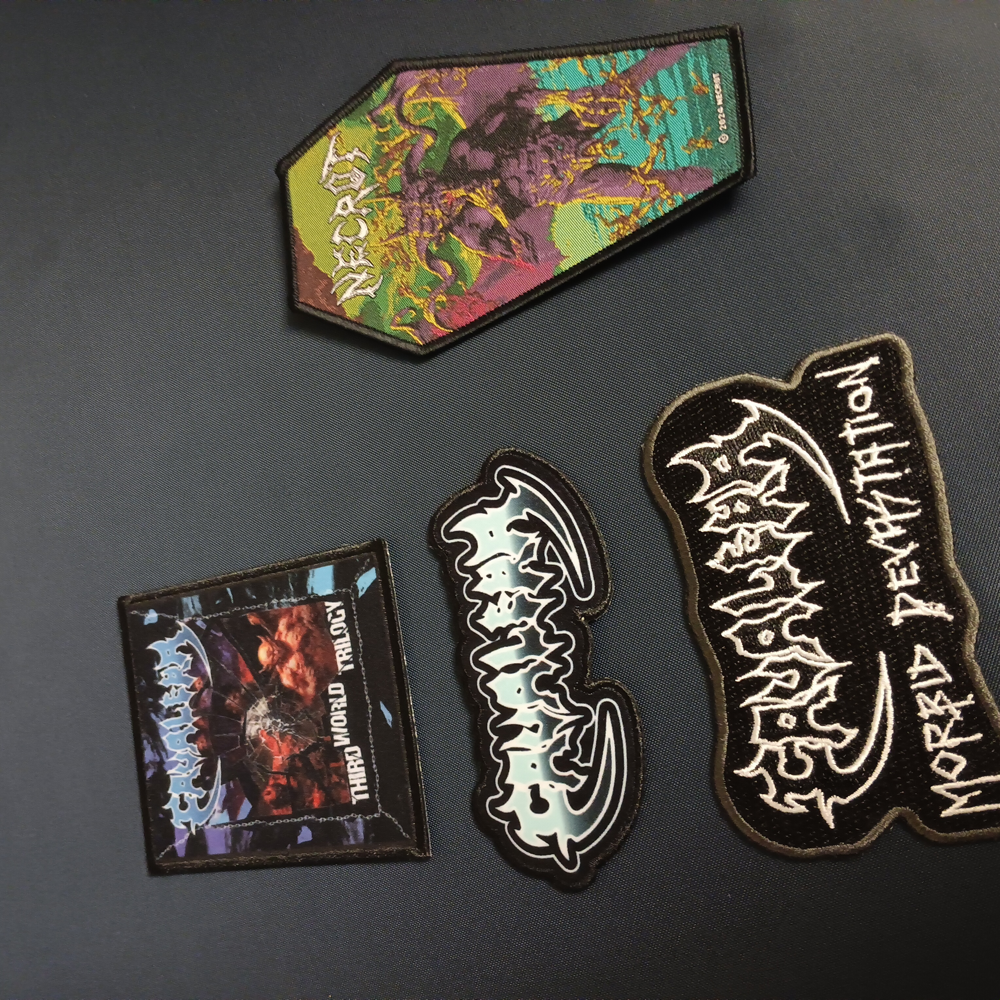
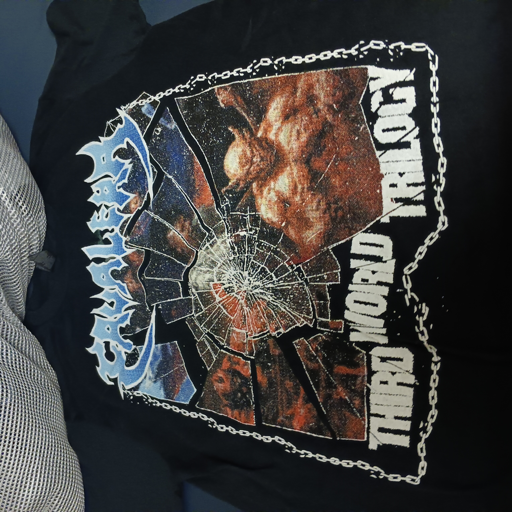
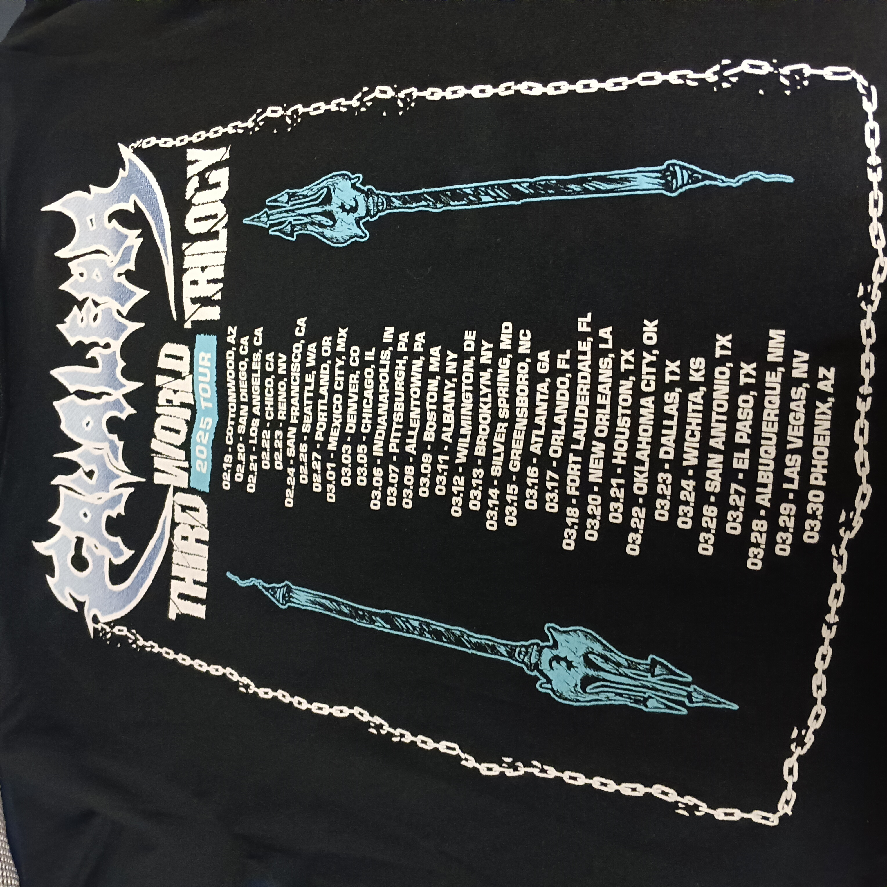

February 27th, 2025

Originally, I was going to attend the Cavalera show at El Corazon on the 26th, the day after the Decapitated/Incantation show, but my friend (that I liked), N****, invited me to the "Battle of the Bands" at the school, and it started at exactly the same time as the show in Seattle. Essentially, I had to choose between the Cavalera brothers and a cute girl that I was interested in. It was a decision I couldn't make. So I did something that few would try: I bought tickets to the Cavalera show in Portland, the very next day. I went to the Battle of the Bands with Naima and had a blast, and the next day after class I got my shit together, ran to the dining hall for a quick bite, and then embarked on the long drive from Bellingham, WA to Portland, OR. I had considered leaving in the middle of my Psych 101 class so I could make it on time, but the lecture was actually pretty interesting, and I felt bad leaving. So I would be late to the show. The traffic on the way there was quite bad, and there were multiple times where I was falling asleep at the wheel (a very bad habit of mine). All in all, it was a 9-10 hour round trip--on a school night.

But it was a great show. If I recall, I missed most of the opener, Dead Heat's set. I think I made it for the last one or two songs. But I got to see Necrot and Cavalera, which was what I came for. I had bought "Lifeless Birth" on CD a few months in preparation, and I didn't get super into it, but I think that had more to do with me not spending enough time with it rather than it being a bad album. Necrot kicked ass live. "Your Hell," "Stench of Decay," and especially "Drill the Skull" were my favorite parts of their set. The Cavalera brothers were also great, naturally. Aside from material from "Bestial Devastation," "Morbid Visions," and "Schizophrenia," they also played a few songs from "Chaos A.D.," which was a pleasant surprise. I loved hearing "Troops of Doom," "Antichrist," "Refuse/Resist," and "Territory." I headbanged quite hard for all of them. There was also a mom who brought her kid with her that were standing in front of me, and eventually the kid offered me his spot up against the railing. I'm not sure why he did that, but that was really nice of him and I appreciated it. One thing that caught my attention during the Cavalera set was the screens on stage. There were a few different videos/edits that it cycled through, but I recognized one of them as one of the hallucinations from the movie "Altered States," which was also the source of the album cover for Godflesh's "Streetcleaner." I took a video of the screens. This was one of the first shows on the tour, so the merch store was decked the fuck out. When I stopped by the merch tables between Dead Heat and Necrot's sets I was taken aback. I had to stop myself from buying a ton of stuff. I got a couple patches from Cavalera, a patch from Necrot, and a Cavalera tour t-shirt. While I was getting merch an older guy complimented my vest, namely the big Morbid Angel patch on the back, and we had a pleasant exchange; he told me about some of the shows he saw live with his wife (or girlfriend, I can't remember), one of them being a Morbid Angel show. I think he might have mentioned Incantation or Suffocation but I can't remember.
Of course, after the show, I still had a long night ahead of me. I had to drive all the way from Portland back to Bellingham--a 4 or 5 hour trip. I stopped on the way home to get McDonald's (and gas), as I usually do. One of the ways I stayed awake for the drive home was keeping the window open. Hard to fall asleep when you're being blasted with 45 degree winds at 80 mph. I remember driving through a nearly-empty freeway that cut through Seattle and loudly playing Painkiller with the windows down. It was honestly a lovely experience. I didn't get to bed until 5 am, with my first class at 10 am. I slept through it. The next day I gave my friend a very in-depth timeline of the day before, so I'll put it here too for posterity.



